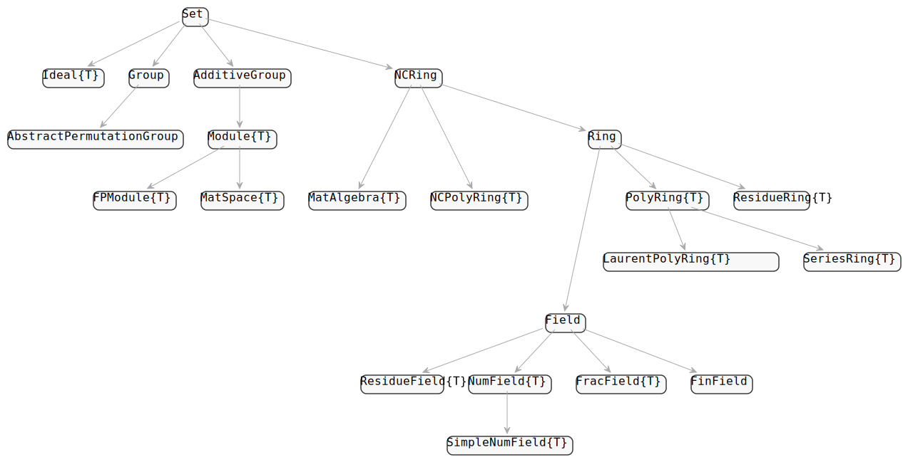
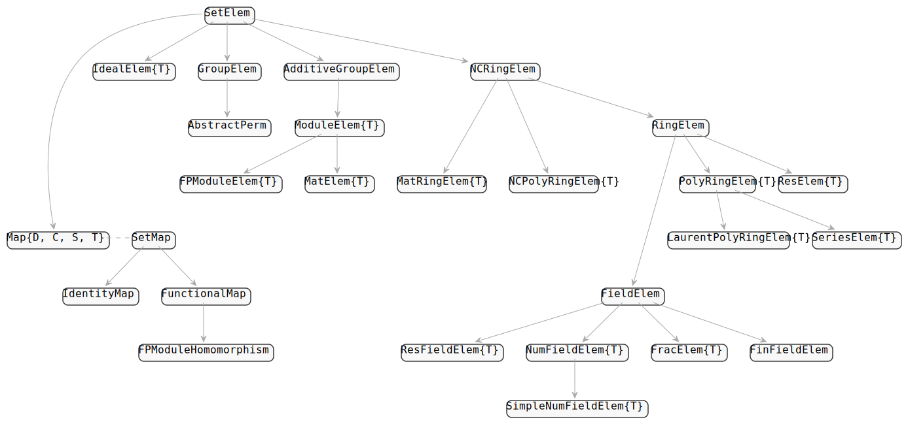

Visualiation of the types of AbstractAlgebra.jl
AbstractAlgebra.jl implements a couple of abstract types which can be extended.
Abstract parents
The following diagram shows a complete list of all abstract types in AbstractAlgebra.jl.

Abstract elements
Similarly the following diagram shows a complete list of all abstract types in AbstractAlgebra.jl.

Concrete types in AbstractAlgebra.jl
Until now we have discussed the abstract types of AbstractAlgebra.jl. Under this subsection we will instead give some examples of concrete types in AbstractAlgebra.jl.
In parentheses we put the types of the corresponding parent objects.
Perm{<:Integer}(SymmetricGroup{<:Integer})GFElem{<:Integer}(GFField{<:Integer})
We also think of various Julia types as though they were AbstractAlgebra.jl types:
BigInt(Integers{BigInt})Rational{BigInt}(Rationals{BigInt})
Then there are various types for generic constructions over a base ring. They are all parameterised by a type T which is the type of the elements of the base ring they are defined over.
Generic.Poly{T}(Generic.PolyRing{T})Generic.MPoly{T}(Generic.MPolyRing{T})Generic.RelSeries{T}(Generic.RelSeriesRing{T})Generic.AbsSeries{T}(Generic.AbsSeriesRing{T})Generic.LaurentSeriesRingElem{T}(Generic.LaurentSeriesRing{T})Generic.LaurentSeriesFieldElem{T}(Generic.LaurentSeriesField{T})Generic.Res{T}(Generic.ResRing{T})Generic.Frac{T}(Generic.FracField{T})Generic.Mat{T}(Generic.MatSpace{T})